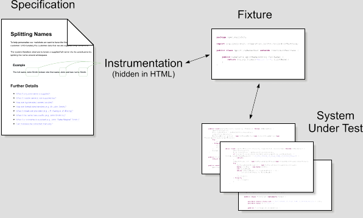
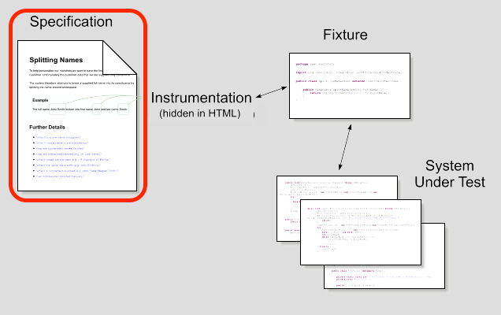
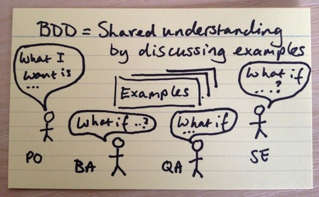
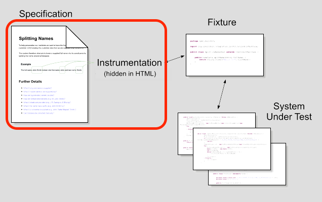
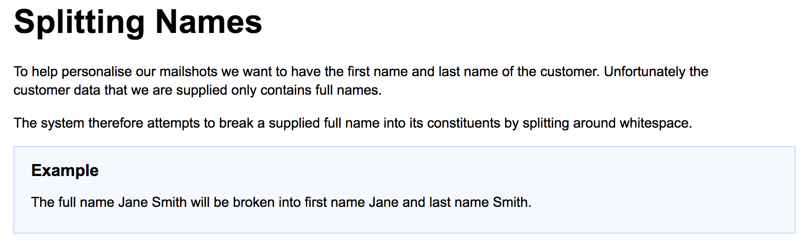
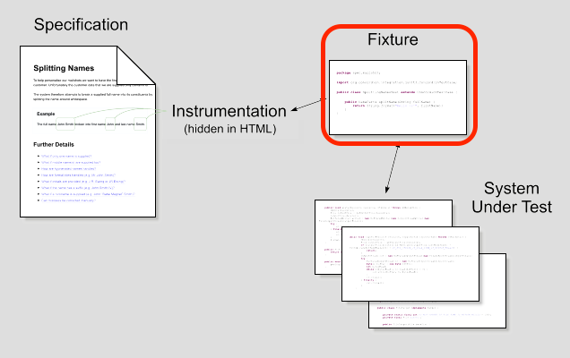
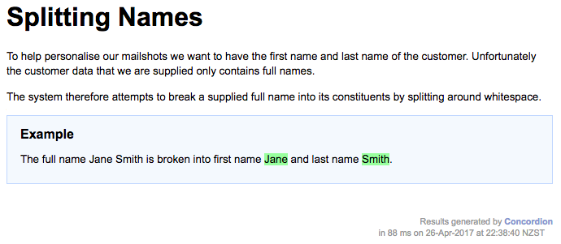
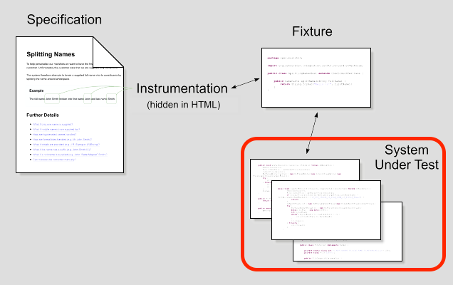
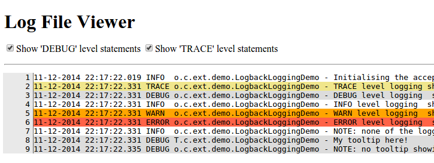
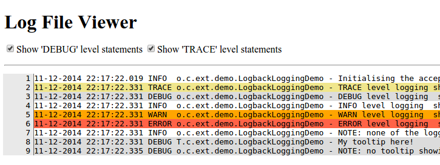

Project Lead @concordion
Using this slide deck
Press the space bar to navigate sequentially, or the left/right/up/down buttons to jump to specific sections.
Press alt and click to zoom in/out of an element.
Concordion.NET is a test runner
for executable specifications
that creates beautiful living documentation


How it works
Specification
Specifications
describe in plain language the business requirements and show examples of desired behaviour
Collaborative specification
Image courtesy http://agilecoach.typepad.com/agile-coaching/2012/03/bdd-in-a-nutshell.html
Specifications
Are written in HTML
(by anyone on the team, typically by a BA or tester)Example specification
<html>
<body>
Splitting Names
To help personalise our mailshots we want to have the first name and last name
of the customer.
Unfortunately the customer data that we are supplied only contains full names.
The system therefore attempts to break a supplied full name into its constituents by
splitting around whitespace.
Example
The full name Jane Smith will be broken into first name Jane and last name Smith.
</body>
</html>
Instrumentation
Instrumentation
In order to make the specification executable, it must be instrumented with commands.
Commands are added as HTML attributes
<span concordion:set="#name">Jane Smith</span> |
|
<span concordion:execute="#result = split(#name)"> |
|
<span concordion:assert-equals="#result.firstName">Jane</span> |
Example instrumentation
<html xmlns:concordion="http://www.concordion.org/2007/concordion">
<head>
<link href="../concordion.css" rel="stylesheet" type="text/css" />
</head>
<body>
<p>The full name Jane Smith
will be broken
into first name Jane
and last name Smith.
</body>
</html>
when previewed...
the instrumentation is hidden
Fixture
Fixture
Runs as a NUnit test
(typically written by a tester or developer)Fixture
using Concordion.NET.Integration;
namespace Marketing.Mailshot.Complete
{
[ConcordionTest]
public class SplittingNamesFixture
{
public Result Split(string fullName)
{
Result result = new Result();
string[] words = fullName.Split(' ');
result.firstName = words[0];
result.lastName = words[1];
return result;
}
}
public class Result
{
public string firstName;
public string lastName;
}
}
Output
System under Test
System under Test
Executes .NET code directly,
or other interfaces via "driver" classes
What are we testing?


Intention Implementation
Other commands
Run another spec
Shipping
Execute on a table
Full Name
First Name
Last Name
John Smith
John
Smith
David Peterson
David
Peterson
Verify Rows
Matching Usernames george.harrison ringo.starr
Demo
Configuring Concordion.NET
See http://concordion.org/integrations/csharp/html/
Concordion Tutorial
See http://concordion.org/tutorial/csharp/html/
Concordion Library
Cloned from https://github.com/concordion/concordion.net
Quotes
"I found it a little hard to start at first"
"everything is really cool, it feels like magic"
"it does what it says"
"write your specs, write your code, feel free to continue by adding more specs and by improving the code"
https://github.com/concordion/concordion.net/issues/14
Concordion.NET implementations
Native implementation
2009 - Concordion ported to C# by Jeffrey Cameron (which inspired him to write Pickles)
2014 - Picked up by Jacek Ratzinger
- NUnit integration
- NuGet package
- Resharper support
- Extensions API
IKVM implementation
2015 - Decision to cross-compile Concordion (Java) code to C# using IKVM
- Reduced effort to get Java improvements to .NET
- Improved compatibility with Java implementation
- Same approach as SpecFlow was using
- Improved performance!
- Feb 2017 - IKVM no longer supported :( more on this later..
Concordion 2.0 (Java)
Downloads

Markdown
Markdown is a simple, natural format for creating rich text:
## This is a H2
This is a paragraph
* This is a
* bullet point list
This is an [example](example.html "Title") link
| Table | Heading |
| ----- | ------- |
| Table | Row 1 |
| Table | Row 2 |
Markdown Editors
Markdown can be created/edited with all sorts of tools:
- Github, Bitbucket, etc
- Mindmapping tools - eg. MindMup
- IDEs - eg. Eclipse, IDEA
- Editors - eg. Notepad++, Sublime
Example specification
# Splitting names
To help personalise our mailshots we want to have the first name and
last name of the customer. Unfortunately the customer data that we are
supplied only contains full names.
The system therefore attempts to break a supplied full name into its
constituents by splitting around whitespace.
### Basic Example
The full name [Jane Smith](- "#name")
is [broken](- "#result = split(#name)")
into first name [Jane](- "?=#result.firstName")
and last name [Smith](- "?=#result.lastName").
when previewed...

IntelliJ IDEA Plugin

Extensions


 

Excel,
Parallel Runner,
Storyboard,
Screenshot,
Logging Tooltip,
Log Viewer
and more...
Comparison
| Concordion | SpecFlow | |
|---|---|---|
| Grammar | Plain English | Gherkinglish |
| Input Format | HTML, MD, Excel | Text |
| Publishes doc with tests | Completely flexible | Limited |
| Screenshots, logs etc in output | Extensible | Limited |
| Instrumentation | In specification | Regexp in code |
| Extensions (Parallel, Excel) | Free, open-source | SpecFlow+ (paid) |
| Languages | Java, Groovy, C# * | 13+ languages |
* C# only supports HTML input currently. Parallel and Excel only currently available for Java.
The future - Concordion.NET 2.0
Reducing the friction of using Concordion.NET
- Update Concordion.NET core to 2.0, including Markdown support
- Based off Native implementation (since IKVM no longer supported)
- Port popular extensions to .NET
- Create Resharper extension (port IDEA plugin?)
- Update website and demo projects
Concordion.NET 2.0 Team
- We're looking for volunteers :)
- Already have a couple on Github issue 15
- Discuss with me or on mailing list
Learn more
This presentation - http://tinyurl.com/concordion-net
 This work is licensed under a Creative Commons Attribution 4.0 International License
This work is licensed under a Creative Commons Attribution 4.0 International License